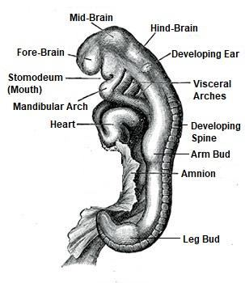

In the next stage, the blastocyst develops into a leech- like creature ('alaqatin'), representing the embryo after gastrulation.
পরবর্তী পর্যায়ে, ব্লাস্টোসিস্ট একটি জোঁকের মতো প্রাণীতে ('আলাকাতিন') বিকশিত হয়, যা গ্যাস্ট্রুলেশনের পরে ভ্রূণের প্রতিনিধিত্ব করে।
FIGURE 22.3: Microscopic View of Human Embryo, 24 Days (alaqatin)
চিত্র 22_3 / Figure 22_3
চিত্র 22.3: মানব ভ্রূণের মাইক্রোস্কোপিক দৃশ্য, 24 দিন (আলাকাতিন)
চিত্র 22_3 / Figure 22_3
In the next stage, different body parts and limbs begin to bud. In the verse, this embryo with somites is described as mudghatin (a chewed lump), formed and unformed. FIGURE 22.4: Embryo with somites after 30 Days (mudghatin)

চিত্র 22_4 / Figure 22_4
পরবর্তী পর্যায়ে, শরীরের বিভিন্ন অঙ্গ এবং অঙ্গ অঙ্কুর শুরু হয়। শ্লোকটিতে, সোমাইটযুক্ত এই ভ্রূণটিকে মুদ্ঘাটিন (একটি চিবানো পিণ্ড) হিসাবে বর্ণনা করা হয়েছে, এটি গঠিত এবং অপ্রকৃত। চিত্র 22.4: 30 দিন পর সোমাইট সহ ভ্রূণ (মুদ্ঘাটিন)
চিত্র 22_4 / Figure 22_4
And We cause whom We will to rest in the wombs for an appointed term, then do We bring you out as babes, then that you may reach your age of full strength, and some of you are called to die, and some are sent back to the feeblest old age so that they know nothing after having known.
এবং আমরা যাকে ইচ্ছা একটি নির্দিষ্ট সময়ের জন্য গর্ভে বিশ্রাম করি, অতঃপর আমরা তোমাদেরকে শিশুরূপে বের করি, অতঃপর তোমরা পূর্ণ শক্তির বয়সে উপনীত হও, এবং তোমাদের মধ্যে কাউকে মৃত্যুর জন্য ডাকা হয়, এবং কাউকে কাউকে দুর্বলতম বার্ধক্যে ফেরত পাঠানো হয় যাতে তারা জানার পর কিছুই জানে না।
The aging dynamics of a human is coded in the genome. The lifespan of a human is fixed while producing a well- matched zygote.
একজন মানুষের বার্ধক্য গতিশীলতা জিনোমে কোড করা হয়। একটি ভালভাবে মিলে যাওয়া জাইগোট তৈরি করার সময় একজন মানুষের জীবনকাল স্থির করা হয়।
And you see the earth barren and lifeless, but when We pour down rain on it, it is stirred, it swells, and it puts forth every kind of beautiful growth. This is so, because God is the Reality, it is He Who gives life to the dead, and it is He Who has power over all things. And verily the Hour will come; there can be no doubt about it, or about that God will raise up all who are in the graves.
এবং আপনি পৃথিবীকে অনুর্বর ও প্রাণহীন দেখতে পান, কিন্তু যখন আমি তার উপর বৃষ্টি বর্ষণ করি, তখন এটি আলোড়িত হয়, এটি ফুলে যায় এবং এটি সর্বপ্রকার সুন্দর বৃদ্ধির জন্ম দেয়। এটি তাই, কারণ ঈশ্বরই বাস্তবতা, তিনিই মৃতকে জীবন দেন এবং তিনিই সবকিছুর উপর ক্ষমতাবান। আর অবশ্যই কেয়ামত আসবে। এতে কোন সন্দেহ থাকতে পারে না যে, আল্লাহ কবরে যারা আছে তাদের পুনরুত্থিত করবেন।
A human develops in the mother‘s womb, but the resurrection of the dead will be different. Then, mankind will grow on the land. The verses above provide an example of this process: a plant zygote and a human zygote are almost the same. If a plant can grow on the earth, why can‘t a human? But plants grow on Earth from seeds. What, then, will serve as the 'seeds' of humans on the Land of Resurrection (Thaqal)? In truth, a human grows old and dies, but he is not truly extinguished: His DNA molecules survive in nature for hundreds of thousands of years; it is his blueprint. His nafs develops in the mother‘s womb, during his life on Earth, and in Illiyin or Sijjin. It becomes a guide of his genome code. His memories are collected from the brain by the angels and preserved in the disc (Lawh-Mahfuz). In a suitable time and space, the soul (nafs) of a human will be paired with a set of his DNA molecules, collected from the remains of his body. These will form his zygote and recreate him using matter supplied in the surroundings. He will be resurrected with his fingerprint intact. ―And I do call to witness the self-reproaching soul (nafs). Does man think that We cannot assemble his bones? Nay, We are able to put together in perfect order the very tips of his fingers.‖ [Al Quran 75:2-4]
একজন মানুষ মাতৃগর্ভে বিকশিত হয়, কিন্তু মৃতদের পুনরুত্থান ভিন্ন হবে। তারপর, মাটিতে মানুষ বেড়ে উঠবে। উপরের আয়াতগুলি এই প্রক্রিয়ার একটি উদাহরণ প্রদান করে: একটি উদ্ভিদ জাইগোট এবং একটি মানব জাইগোট প্রায় একই। পৃথিবীতে গাছ জন্মাতে পারলে মানুষ কেন পারে না? কিন্তু বীজ থেকে পৃথিবীতে গাছপালা জন্মায়। তাহলে, কেয়ামতের ভূমিতে (থাকাল) মানুষের 'বীজ' হিসেবে কী কাজ করবে? প্রকৃতপক্ষে, একজন মানুষ বৃদ্ধ হয় এবং মারা যায়, কিন্তু সে প্রকৃতপক্ষে নির্বাপিত হয় না: তার ডিএনএ অণু শত সহস্র বছর ধরে প্রকৃতিতে বেঁচে থাকে; এটা তার নীলনকশা। তার নফস বিকশিত হয় মাতৃগর্ভে, পৃথিবীতে তার জীবদ্দশায় এবং ইল্লিয়ীন বা সিজ্জিনে। এটি তার জিনোম কোডের একটি গাইড হয়ে ওঠে। তার স্মৃতি মস্তিষ্ক থেকে ফেরেশতাদের দ্বারা সংগ্রহ করা হয় এবং ডিস্কে (লাহ-মাহফুজ) সংরক্ষিত হয়। একটি উপযুক্ত সময় এবং স্থানের মধ্যে, একজন মানুষের আত্মা (নফস) তার দেহের অবশিষ্টাংশ থেকে সংগৃহীত তার ডিএনএ অণুর একটি সেটের সাথে যুক্ত হবে। এগুলো তার জাইগোট গঠন করবে এবং আশেপাশে সরবরাহকৃত পদার্থ ব্যবহার করে তাকে পুনরায় তৈরি করবে। তার আঙুলের ছাপ অক্ষত অবস্থায় তাকে পুনরুত্থিত করা হবে। -এবং আমি আত্ম-নিন্দাকারী আত্মাকে (নফস) সাক্ষী করার জন্য ডাকি। মানুষ কি মনে করে যে, আমরা তার হাড়গুলো একত্র করতে পারব না? বরং, আমরা তার আঙ্গুলের অগ্রভাগকে নিখুঁতভাবে একত্রিত করতে সক্ষম।'' [আল কুরআন 75:2-4]
The Resurrection of the Dead is deliberately discussed in Section-6 of Chapter-39.
মৃতদের পুনরুত্থান ইচ্ছাকৃতভাবে অধ্যায়-39 এর ধারা-6 এ আলোচনা করা হয়েছে।
Yet there is among men such a one as disputes about God without Knowledge, without Guidance, and without a Book of Enlightenment—bending his side in order to lead (men) astray from the Path of God. For him there is disgrace in this life; and on the Day of Judgment, We shall make him taste the penalty of burning. This is because of the deeds, which your hands sent forth; for verily, God is not unjust to His servants.
তথাপি মানুষের মধ্যে এমন একজন আছে যারা জ্ঞান ছাড়াই, নির্দেশনা ছাড়াই এবং আলোকিত গ্রন্থ ছাড়াই ঈশ্বর সম্পর্কে বিতর্ক করে - (মানুষকে) ঈশ্বরের পথ থেকে বিচ্যুত করার জন্য তার পক্ষ নিচু করে। তার জন্য এই জীবনে অসম্মান আছে; আর কিয়ামতের দিন আমি তাকে দহনের শাস্তি আস্বাদন করাব। এটা তোমার হাতের কাজের কারণে; কারণ ঈশ্বর তাঁর বান্দাদের প্রতি অন্যায়কারী নন।
There are among men some who serve God, as it were upon the edge—if good befalls them, they are therewith well content, but if a trial comes to them, they turn on their faces. They lose both this world and the hereafter—that is loss for all to see! They call on such deities besides God as can neither hurt, nor profit them—that is straying far indeed! They call on one whose hurt is nearer than his profit—evil indeed is the patron and evil the companion! Verily, God will admit those who believe and work righteous deeds to Jannaat, beneath which rivers flow; for God carries out all that He plans. If any think that God will not help him in this world and the hereafter, let him stretch out a rope to the ceiling and cut off—then let him see whether his plan will remove that which enrages! Thus, have We sent down clear signs, and verily God does guide whom He wills! Those who believe, those who follow the Jewish (scriptures), and the Sabians, Christians, Magians, and Polytheists—God will judge between them on the Day of Judgment; for God is witness of all things. See you not that to God bow down in worship all things that are in the Skies and on the Lands—the sun, the moon, the stars; the hills, the trees, the animals; and a great number among mankind, but a great number are such as are fit for punishment, and such as God shall disgrace; and who-so-ever God disgraces, none can raise to honor; for God carries out all that He wills. These two antagonists dispute with each other about their Lord. But those who deny, for them will be cut out a garment of Fire; over their heads will be poured out boiling water; with it will be scalded what is within their bodies as well as skins. In addition, there will be maces of iron (to punish) them. Every time they wish to get away from there from anguish, they will be forced back therein and "Taste you the Penalty of Burning!" God will admit those who believe and work righteous deeds to Jannaat, beneath which rivers flow; they shall be adorned therein with bracelets of gold and pearls, and their garments there will be of silk; for they have been guided to the purest of speeches; they have been guided to the Path of Him Who is Worthy of Praise. Segment 2 The Hajj
মানুষের মধ্যে কিছু লোক আছে যারা ঈশ্বরের সেবা করে, যেমনটি প্রান্তে ছিল- যদি তাদের মঙ্গল হয় তবে তারা তাতে সন্তুষ্ট থাকে, কিন্তু যদি তাদের কাছে কোনো পরীক্ষা আসে, তারা মুখ ফিরিয়ে নেয়। তারা ইহকাল ও পরকাল উভয়ই হারায়-যা সকলের দেখার ক্ষতি! তারা আল্লাহ ব্যতীত এমন দেবতাদের ডাকে যারা তাদের ক্ষতি করতে পারে না, লাভও করতে পারে না-এটি আসলেই পথভ্রষ্ট! তারা এমন একজনকে ডাকে যার ক্ষতি তার লাভের চেয়ে বেশি - প্রকৃতপক্ষে মন্দ তার পৃষ্ঠপোষক এবং খারাপ সঙ্গী! যারা ঈমান আনে ও সৎকাজ করে, আল্লাহ তাদেরকে জান্নাতে প্রবেশ করাবেন, যার তলদেশে নদী প্রবাহিত। কারণ ঈশ্বর যা পরিকল্পনা করেন তার সবই করেন৷ যদি কেউ মনে করে যে, আল্লাহ তাকে দুনিয়া ও আখেরাতে সাহায্য করবেন না, সে যেন ছাদের কাছে দড়ি বিছিয়ে কেটে ফেলে দেয়-তাহলে সে দেখতে পাবে তার পরিকল্পনা যা ক্রোধ সৃষ্টি করে তা দূর করে কিনা! এমনিভাবে আমি সুস্পষ্ট নিদর্শনাবলী নাযিল করেছি এবং আল্লাহ যাকে ইচ্ছা পথ দেখান। যারা বিশ্বাসী, যারা ইহুদি (ধর্মগ্রন্থ) অনুসরণ করে এবং সাবিয়ান, খ্রিস্টান, জাদুকর এবং মুশরিক- আল্লাহ তাদের মধ্যে বিচারের দিন বিচার করবেন; কারণ ঈশ্বর সব কিছুর সাক্ষী। তুমি কি দেখ না যে, আকাশে ও ভূমিতে যা কিছু আছে—সূর্য, চন্দ্র, নক্ষত্র সবই ঈশ্বরের উপাসনা করে; পাহাড়, গাছ, প্রাণী; এবং মানবজাতির মধ্যে একটি বড় সংখ্যা, কিন্তু একটি মহান সংখ্যা যারা শাস্তির জন্য উপযুক্ত, এবং যাদের ঈশ্বর লাঞ্ছিত করবেন; আর আল্লাহ যাকে লাঞ্ছিত করেন তাকে কেউ সম্মান করতে পারে না। কারণ ঈশ্বর যা ইচ্ছা করেন সবই করেন। এই দুই প্রতিপক্ষ তাদের পালনকর্তা সম্পর্কে একে অপরের সাথে বিতর্ক করে। অতঃপর যারা অস্বীকার করবে, তাদের জন্য জাহান্নামের পোশাক কেটে দেওয়া হবে। তাদের মাথার উপর ফুটন্ত পানি ঢেলে দেওয়া হবে। এটি দিয়ে তাদের দেহের মধ্যে যা আছে এবং চামড়াগুলিও জ্বালিয়ে দেওয়া হবে। উপরন্তু, তাদের লোহার গদা (শাস্তি) থাকবে। যখনই তারা সেখান থেকে যন্ত্রণা থেকে সরে যেতে চাইবে, তখনই তারা সেখানে ফিরে যেতে বাধ্য হবে এবং "আস্বাদন কর দহনের শাস্তি!" যারা ঈমান আনে ও সৎকর্ম করে আল্লাহ তাদেরকে জান্নাতে প্রবেশ করাবেন, যার তলদেশে নদী প্রবাহিত। সেখানে তাদের পরানো হবে স্বর্ণের কঙ্কন ও মুক্তা এবং তাদের পোশাক হবে রেশমের। কারণ তারা শুদ্ধতম বক্তৃতার দিকে পরিচালিত হয়েছে; তারা তাঁর পথে পরিচালিত হয়েছে যিনি প্রশংসার যোগ্য। সেগমেন্ট 2 হজ
As to those who have rejected and would keep back (men) from the Way of God and from the Sacred Mosque, which We have made (open) to men—equal is the dweller there and the visitor from the country; and any whose purpose therein is profanity or wrong-doing, them will We cause to taste of a Most Grievous Penalty. And when We showed Abraham the site of the house (Kaaba): "Associate not anything with Me and sanctify My House for those who compass it round, or stand up, or bow, or prostrate themselves." "And proclaim the Pilgrimage among men. They will come to you on foot and on every kind of camel, lean on account of journeys through deep and distant mountain highways that they may witness the benefits for them and celebrate the name of God through the Days appointed." "Over the cattle, which He has provided for them, then eat you thereof and feed the distressed ones in want." "Then let them complete the rites prescribed for them, perform their vows, and circumambulate the Ancient House." Such whoever honors the sacred rites of God, for him, it is good in the Sight of his Lord. Lawful to you are cattle, except those mentioned to you, but shun the abomination of idols and shun the word that is false being true in faith to God and never assigning partners to Him. If anyone assigns partners to God, he is as if he had fallen from the sky and been snatched up by birds or the wind had swooped and thrown him into a far distant place. Such, and whoever holds in honor the symbols of God, such should come truly from piety of heart; in them you have benefits for a term appointed; in the end their place of sacrifice is near the Ancient House. To every people did We appoint religious ceremonies that they may mention the name of God over the beast of cattle that He has given them for food. But your God is One God; submit then your wills to Him and give you the good news to those who humble themselves—to those whose hearts when God is mentioned are filled with fear, who show patient perseverance over their afflictions, and who establish As- Salat, and who spend out of what We have bestowed upon them. The sacrificial camels we have made for you as among the symbols from God, in them is good for you, then pronounce the name of God over them as they line up. When they are down on their sides eat you thereof and feed such as live in contentment and such as beg with due humility. Thus, have We made animals subject to you that you may be grateful. It is not their meat, nor their blood that reaches God; it is your piety that reaches Him. He has thus made them subject to you that you may glorify God for His Guidance to you and proclaim the good news to all who do right.
যারা প্রত্যাখ্যান করেছে এবং (মানুষদের) আল্লাহর পথ থেকে এবং পবিত্র মসজিদ থেকে বিরত রাখবে, যা আমি মানুষের জন্য (উন্মুক্ত) করেছি- সেখানে বসবাসকারী এবং দেশ থেকে আসা উভয়ই সমান। আর যার উদ্দেশ্য তাতে অশ্লীলতা বা অন্যায় কাজ, আমি তাদেরকে কঠিন শাস্তির স্বাদ আস্বাদন করাব। এবং যখন আমরা ইব্রাহীমকে ঘরের (কাবা) স্থান দেখালাম: "আমার সাথে কোন কিছুকে শরীক করো না এবং আমার ঘরকে পবিত্র কর তাদের জন্য যারা একে প্রদক্ষিণ করে, বা দাঁড়ায়, বা রুকু করে বা সিজদা করে।" "এবং মানুষের মধ্যে তীর্থযাত্রা ঘোষণা করুন। তারা আপনার কাছে আসবে পায়ে হেঁটে এবং সব ধরণের উটের পিঠে, হেলান দিয়ে গভীর এবং দূরবর্তী পর্বত মহাসড়কের মাধ্যমে ভ্রমণের কারণে যাতে তারা তাদের জন্য উপকারের সাক্ষী হতে পারে এবং নির্ধারিত দিনের মাধ্যমে আল্লাহর নাম উদযাপন করতে পারে।" "পশুর উপর, যা তিনি তাদের জন্য প্রদান করেছেন, তারপর তোমরা তা থেকে খাও এবং অভাবগ্রস্তদেরকে খাওয়াও।" "তাহলে তারা তাদের জন্য নির্ধারিত আচারগুলি সম্পূর্ণ করুক, তাদের মানত পালন করুক এবং প্রাচীন বাড়িটি প্রদক্ষিণ করুক।" যে ব্যক্তি আল্লাহর পবিত্র আচার-অনুষ্ঠানকে সম্মান করে, তার জন্য তা তার পালনকর্তার দৃষ্টিতে উত্তম। তোমাদের জন্য গবাদিপশু হালাল, তোমাদের উল্লেখ করা ছাড়া, কিন্তু মূর্তির জঘন্য কাজ পরিহার কর এবং মিথ্যা কথা বর্জন কর যা আল্লাহর প্রতি বিশ্বাসে সত্য এবং কখনও তাঁর শরীক না করে। যদি কেউ আল্লাহর সাথে শরীক করে, সে যেন আকাশ থেকে পড়ল এবং পাখি তাকে ছিনিয়ে নিয়ে গেল বা বাতাস তাকে ঝাঁপিয়ে পড়ল এবং তাকে দূরবর্তী স্থানে নিক্ষেপ করল। এই ধরনের, এবং যারা ঈশ্বরের প্রতীককে সম্মান করে, তাদের অবশ্যই হৃদয়ের ধার্মিকতা থেকে আসা উচিত; তাদের মধ্যে একটি নির্দিষ্ট সময়ের জন্য আপনার সুবিধা আছে; শেষ পর্যন্ত তাদের বলিদানের স্থান প্রাচীন বাড়ির কাছে। প্রত্যেক জাতির জন্য আমরা ধর্মীয় অনুষ্ঠান নির্ধারণ করেছি যাতে তারা গবাদি পশুর উপরে ঈশ্বরের নাম উল্লেখ করতে পারে যা তিনি তাদের খাদ্যের জন্য দিয়েছেন। কিন্তু তোমাদের উপাস্য এক আল্লাহ; অতঃপর আপনার ইচ্ছাকে তাঁর কাছে পেশ করুন এবং আপনাকে সুসংবাদ দিন যারা বিনয়ী হয়- তাদের জন্য যাদের হৃদয় ভীত হয়ে পড়ে যখন ঈশ্বরের কথা বলা হয়, যারা তাদের দুঃখ-কষ্টের জন্য ধৈর্য ধারণ করে এবং যারা নামাজ কায়েম করে এবং আমরা তাদের যা দিয়েছি তা থেকে ব্যয় করে। কোরবানির উটগুলোকে আমরা আল্লাহর পক্ষ থেকে নিদর্শন হিসেবে তোমাদের জন্য বানিয়েছি, তাতে তোমাদের জন্য মঙ্গল রয়েছে, তারপর তারা সারিবদ্ধভাবে তাদের ওপর আল্লাহর নাম উচ্চারণ কর। যখন তারা তাদের পাশে থাকবে তখন তা থেকে তোমাদেরকে খাবে এবং তৃপ্তিতে বসবাসকারী এবং যথাযথ বিনয়ের সাথে ভিক্ষা প্রার্থনাকারীকে খাওয়াবে। এভাবে আমি পশুদেরকে তোমাদের অধীন করে দিয়েছি যাতে তোমরা কৃতজ্ঞ হতে পার। এটা তাদের গোশত নয়, তাদের রক্তও ঈশ্বরের কাছে পৌঁছায় না; তোমার তাকওয়াই তার কাছে পৌঁছায়। এইভাবে তিনি তাদের আপনার অধীন করে দিয়েছেন যাতে আপনি ঈশ্বরের গৌরব করতে পারেন তাঁর পথপ্রদর্শনের জন্য এবং যারা সৎকর্মশীল তাদের কাছে সুসংবাদ ঘোষণা করতে পারেন।
The verses talk about the rituals of Hajj that includes: Journey on foot and on every kind of camels through deep and distant mountain highways. Celebrating the name of God through the days appointed. Sacrificing cattle. Completion of the rites, if any is prescribed for them. Performing the vows. Circumambulating the Ancient House. We follow the process followed by our Prophet (pbuh) that includes some more practices such as wearing the dress of Ehram, throwing stone to Satan, staying in the Arafat, etc.
আয়াতগুলো হজের আচার-অনুষ্ঠান সম্পর্কে কথা বলে যার মধ্যে রয়েছে: গভীর ও দূরবর্তী পাহাড়ি সড়ক দিয়ে পায়ে হেঁটে এবং সব ধরনের উটে যাত্রা। নির্ধারিত দিনগুলির মাধ্যমে ঈশ্বরের নাম উদযাপন করা। গবাদি পশু কোরবানি করা। আচার সমাপ্তি, যদি তাদের জন্য নির্ধারিত থাকে। মানত পালন করা। প্রাচীন বাড়ি প্রদক্ষিণ করা। আমরা আমাদের নবী (সাঃ) দ্বারা অনুসরণ করা প্রক্রিয়া অনুসরণ করি যার মধ্যে আরো কিছু অভ্যাস রয়েছে যেমন এহরামের পোশাক পরা, শয়তানের প্রতি পাথর নিক্ষেপ করা, আরাফাতে অবস্থান করা ইত্যাদি।
Segment 3 Muslims living beyond the Jurisdiction of the Islamic Leadership
সেগমেন্ট 3 ইসলামিক নেতৃত্বের এখতিয়ারের বাইরে বসবাসকারী মুসলিমরা
Verily, God will defend those who believe. Verily, God loves not any that is a traitor to faith or shows ingratitude. To those against whom war is made, permission is given because they are wronged, and verily God is most powerful for their aid—those who have been expelled from their homes in defiance of right, except that they say, "Our Lord is God". Did not God check one set of people by means of another, there would surely have been pulled down monasteries, churches, synagogues, and mosques in which the name of God is commemorated in abundant measure. God will certainly aid those who aid His (cause), for verily God is full of Strength, Exalted in Might. Those who if We give them power in the land establish As-Salat to pay the Zakat, and they enjoin Al-Maruf (all that Islam orders to do) and forbid Al-Munkar (all that Islam has forbidden). And with Allah rests the end of affairs.
নিঃসন্দেহে যারা ঈমান এনেছে ঈশ্বর তাদের রক্ষা করবেন। নিঃসন্দেহে, আল্লাহ এমন কাউকে পছন্দ করেন না যে বিশ্বাসের সাথে বিশ্বাসঘাতক বা অকৃতজ্ঞতা দেখায়। যাদের বিরুদ্ধে যুদ্ধ করা হয়েছে, তাদের অনুমতি দেওয়া হয়েছে কারণ তাদের প্রতি অবিচার করা হয়েছে, এবং সত্যই আল্লাহ তাদের সাহায্যের জন্য সবচেয়ে শক্তিশালী - যারা অধিকারের অমান্য করে তাদের ঘর থেকে বহিষ্কৃত হয়েছে, তবে তারা বলে, "আমাদের প্রভু ঈশ্বর"। ঈশ্বর কি এক সেট লোককে অন্যের মাধ্যমে পরীক্ষা করেননি, সেখানে অবশ্যই মঠ, গীর্জা, উপাসনালয় এবং মসজিদগুলি ভেঙে ফেলা হত যেখানে প্রচুর পরিমাণে ঈশ্বরের নাম স্মরণ করা হয়। আল্লাহ অবশ্যই তাদের সাহায্য করবেন যারা তাঁর (কারণে) সাহায্য করে, কারণ নিশ্চয়ই আল্লাহ শক্তিতে পরিপূর্ণ, পরাক্রমশালী। যাদেরকে আমরা দেশে ক্ষমতা দিলে তারা যাকাত প্রদানের জন্য সালাত কায়েম করবে এবং তারা আল-মারুফ (ইসলাম যা করতে আদেশ করেছে) আদেশ করবে এবং আল-মুনকার (ইসলাম যা নিষিদ্ধ করেছে) নিষেধ করবে। আর আল্লাহর কাছেই সব কাজের শেষ।
Part-2 (Chapter 10 to 30) of the Quran is 'Guidance for Mankind'. The part is a common guidance to all. Therefore, the permission to fight, as given in the verses above, applies to Islamic communities living beyond the Home of Ummah (Darussalam / Home of Peace), which spans from Morocco to the Pamirs. The verses above grant the following groups permission to fight for the mentioned causes: The Muslims against whom a war is made; the permission is given because they are wronged. Muslims who have been wrongfully expelled from their homes simply because they say, "Our Lord is Allah". Part of the verses above identifies the types of people who are permitted to lead: ―Those who if We give them power in the land enjoin As-Salat to pay the Zakat, and they enjoin Al-Maruf (all that Islam orders to do) and forbid Al-Munkar (all that Islam has forbidden). And with Allah rests the end of affairs‖. Thus, the Quran authorizes local Islamic leadership, residing outside the jurisdiction of central Islamic authority, to struggle for the causes mentioned in the verses above. Note:
কুরআনের পার্ট-2 (অধ্যায় 10 থেকে 30) হল 'মানবজাতির জন্য নির্দেশনা'। অংশটি সকলের জন্য একটি সাধারণ নির্দেশিকা। অতএব, যুদ্ধের অনুমতি, যেমন উপরের আয়াতগুলিতে দেওয়া হয়েছে, উম্মাহর হোম (দারুসসালাম / শান্তির বাড়ি) এর বাইরে বসবাসকারী ইসলামিক সম্প্রদায়গুলির জন্য প্রযোজ্য, যা মরক্কো থেকে পামির পর্যন্ত বিস্তৃত। উপরের আয়াতগুলি নিম্নলিখিত দলগুলিকে উল্লিখিত কারণগুলির জন্য লড়াই করার অনুমতি দেয়: যে মুসলমানদের বিরুদ্ধে যুদ্ধ করা হয়েছে; অনুমতি দেওয়া হয়েছে কারণ তাদের প্রতি অবিচার করা হয়েছে। মুসলমান যাদেরকে তাদের বাড়ি থেকে অন্যায়ভাবে বহিষ্কার করা হয়েছে কারণ তারা বলে, "আমাদের প্রভু আল্লাহ"। উপরের আয়াতের কিছু অংশ চিহ্নিত করে যে ধরনের লোকদের নেতৃত্ব দেওয়ার অনুমতি দেওয়া হয়েছে: - যাদেরকে আমরা যদি দেশে ক্ষমতা দেই, তারা জাকাত প্রদানের জন্য নামাজের নির্দেশ দেয় এবং তারা আল-মারুফ (ইসলাম যা করার আদেশ দেয়) নির্দেশ দেয় এবং আল-মুনকার (ইসলাম যা নিষিদ্ধ করেছে) নিষিদ্ধ করে। আর আল্লাহর কাছেই সব কাজের শেষ"। এইভাবে, কোরান কেন্দ্রীয় ইসলামী কর্তৃপক্ষের এখতিয়ারের বাইরে বসবাসকারী স্থানীয় ইসলামী নেতৃত্বকে উপরোক্ত আয়াতে উল্লিখিত কারণগুলির জন্য সংগ্রাম করার অনুমতি দেয়। দ্রষ্টব্য:
It should be noted that within the Home of Ummah (Darussalam / Home of Peace), which spans from Morocco to the Pamirs, people cannot engage in war without permission from the central Islamic leadership (Caliph). If they do so, they risk creating disorder in the land.
এটি উল্লেখ করা উচিত যে হোম অফ উম্মাহ (দারুসসালাম / শান্তির বাড়ি), যা মরক্কো থেকে পামির পর্যন্ত বিস্তৃত, কেন্দ্রীয় ইসলামী নেতৃত্বের (খলিফা) অনুমতি ছাড়া লোকেরা যুদ্ধে জড়াতে পারে না। যদি তারা তা করে তাহলে তারা জমিতে বিশৃঙ্খলা সৃষ্টির আশঙ্কা করছে।
If they treat you as false, so did the peoples before them, the People of Noah and 'Ad and Thamud, those of Abraham. And Lot and the Companions of the Madyan and Moses were rejected. But I granted respite to the Unbelievers. Then I seized them, and how was my punishment! How many populations have We destroyed, which were given to wrong-doing? They tumbled down on their roofs. And how many wells are lying idle and neglected, and castles lofty and well-built? Do they not travel through the land so that their hearts may thus learn wisdom and their ears may thus learn to hear? Truly, it is not their eyes that are blind, but their minds (qalbs), which are in their chests, yet they ask you to hasten on the Punishment! But God will not fail in His promise. Verily, a Day in the sight of thy Lord is like a thousand years of your reckoning. Remarks:
যদি তারা তোমাকে মিথ্যা বলে, তবে তাদের পূর্ববর্তী জাতি, নূহের সম্প্রদায় এবং আদ ও সামুদ, ইব্রাহীমের সম্প্রদায়ও তাই করেছে। আর লূত ও মাদইয়ানের সাথী ও মূসা প্রত্যাখ্যাত হয়েছিল। কিন্তু আমি কাফেরদের অবকাশ দিয়েছিলাম। অতঃপর আমি তাদেরকে পাকড়াও করলাম, আর আমার শাস্তি কেমন হলো! কত জনগোষ্ঠীকে আমরা ধ্বংস করেছি, যা অন্যায়ের জন্য দেওয়া হয়েছিল? তারা তাদের ছাদে ছিটকে পড়ে। আর কত কূপ অলস ও অবহেলিত পড়ে আছে, আর সুউচ্চ ও সুনির্মিত দুর্গ? তারা কি দেশে ভ্রমণ করে না, যাতে তাদের অন্তর প্রজ্ঞা শিখতে পারে এবং তাদের কান শুনতে শেখে? সত্যই, তাদের চোখ অন্ধ নয়, তাদের মন (ক্বালব) যা তাদের বুকে রয়েছে, তবুও তারা আপনাকে শাস্তির জন্য ত্বরান্বিত করতে বলে! কিন্তু ঈশ্বর তাঁর প্রতিশ্রুতিতে ব্যর্থ হবেন না। নিঃসন্দেহে আপনার পালনকর্তার কাছে একটি দিন আপনার হিসাব-নিকাশের হাজার বছরের সমান। মন্তব্য: